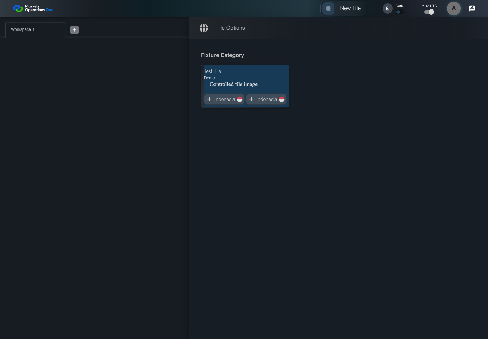

UX-072 profile or catalog resilience
FAIL · application/run-050/ux-072-profile-or-catalog-resilience-44c0c75f49ba-attempt-1 · ACTUAL_APPLICATION_LOCAL_SERVICES
Actual React shell. Controlled catalog, user identity, photo failures, and SystemJS tenant. Chromium only. Accessibility and layout outcomes are proposed probes; no approved conformance standard is inferred.
2026-10-22T06:12:04.719Z to 2026-10-22T06:12:07.011Z
Assertions and result · Artifact manifest · Exact run inputs and source hashes
Result SHA-256:de7f1bb2e130b99762b84c8dee3f581eb94652ff96293dda4a8386300b4472f7Retained failure details
[
{
"message": "Error: \u001b[2mexpect(\u001b[22m\u001b[31mreceived\u001b[39m\u001b[2m).\u001b[22mtoBe\u001b[2m(\u001b[22m\u001b[32mexpected\u001b[39m\u001b[2m) // Object.is equality\u001b[22m\n\nExpected: \u001b[32mtrue\u001b[39m\nReceived: \u001b[31mfalse\u001b[39m",
"stack": "Error: \u001b[2mexpect(\u001b[22m\u001b[31mreceived\u001b[39m\u001b[2m).\u001b[22mtoBe\u001b[2m(\u001b[22m\u001b[32mexpected\u001b[39m\u001b[2m) // Object.is equality\u001b[22m\n\nExpected: \u001b[32mtrue\u001b[39m\nReceived: \u001b[31mfalse\u001b[39m\n at /Users/lushevol/code/github/ratan-release-impact/workbench/e2e/audit-specs/ux-shell.spec.ts:182:137\n at AuditCapture.step (/Users/lushevol/code/github/ratan-release-impact/workbench/e2e/support/audit-fixture.ts:94:21)\n at /Users/lushevol/code/github/ratan-release-impact/workbench/e2e/audit-specs/ux-shell.spec.ts:155:30",
"location": {
"file": "/Users/lushevol/code/github/ratan-release-impact/workbench/e2e/audit-specs/ux-shell.spec.ts",
"column": 137,
"line": 182
},
"snippet": " 180 | const buttons=app.card().getByRole('button').filter({hasText:/^Indonesia$/});await expect(buttons).toHaveCount(2);\n 181 | const identifiers=await buttons.evaluateAll(nodes=>nodes.map(node=>node.getAttribute('data-route')||node.getAttribute('data-record-id')||node.getAttribute('id')||node.getAttribute('aria-label')));\n> 182 | await audit.record('duplicate-entry-identifiers',identifiers);expect(identifiers.every(Boolean)&&new Set(identifiers).size===2).toBe(true);return;\n | ^\n 183 | }\n 184 | throw new Error(`Unbound resilience step ${id}: ${text}`);\n 185 | });"
}
]Machine observations
- duplicate-entry-identifiers.json
7bd10689f918b135e0eaaae7ec288fab08f57b8a732ebe5d259f732ae50f11e1
Screenshot capture: CAPTURED. Named frames: 4.
Step screenshot evidence: INCOMPLETE. 3/9 canonical steps have execution screenshots.
Step 4 has no screenshot from an executed step. Step 5 has no screenshot from an executed step. Step 6 has no screenshot from an executed step. Step 7 has no screenshot from an executed step. Step 8 has no screenshot from an executed step. Step 9 has no screenshot from an executed step.
Canonical step timeline
Given USER-A has Test Tile entries named "Indonesia" with routes "/fixture/one" and "/fixture/two"
Execution: PASSED.
1. step-01 Visible state after step 1: Given USER-A has Test Tile entries named "Indonesia" with routes "/fixture/one" and "/fixture/two"
2026-10-22T06:12:06.146Z · 1440×1000
Step: /Users/lushevol/code/github/ratan-release-impact/workbench/tasks/ui-test-coverage-20261022/test-cases.md:14615
SHA-256:b0d8bd3f9faf25b9831e8e67fc0e92f9f9cff7591bb746b16bfcb116162ff137When USER-A clicks the section labelled "New Tile" on the Home page
Execution: PASSED.
2. step-02 Visible state after step 2: When USER-A clicks the section labelled "New Tile" on the Home page
2026-10-22T06:12:06.297Z · 1440×1000
Step: /Users/lushevol/code/github/ratan-release-impact/workbench/tasks/ui-test-coverage-20261022/test-cases.md:14616
SHA-256:51c7c5576063eb32e242dc6a88297aebd5e1540e7c4b401dc8c610068f08a8abThen The two buttons labelled "Indonesia" in the Test Tile section of the Tile Options panel expose distinct route or record identifiers
Execution: FAILED.
3. step-03-failure Visible state when step 3 failed. Later steps did not execute.
2026-10-22T06:12:06.391Z · 1440×1000
Step: /Users/lushevol/code/github/ratan-release-impact/workbench/tasks/ui-test-coverage-20261022/test-cases.md:14617
SHA-256:51c7c5576063eb32e242dc6a88297aebd5e1540e7c4b401dc8c610068f08a8abWhen USER-A clicks the button labelled "Indonesia" in the section labelled "Test Tile" within the Tile Options panel on the Home page associated with fixture route "/fixture/one"
Execution: NOT_EXECUTED.No screenshot is recorded for this step. No executed state is claimed.
Then The independent selected-route probe equals "/fixture/one"
Execution: NOT_EXECUTED.No screenshot is recorded for this step. No executed state is claimed.
When The isolated browser fixture restores the initial catalog and workspace state
Execution: NOT_EXECUTED.No screenshot is recorded for this step. No executed state is claimed.
And USER-A clicks the section labelled "New Tile" on the Home page
Execution: NOT_EXECUTED.No screenshot is recorded for this step. No executed state is claimed.
And USER-A clicks the button labelled "Indonesia" in the section labelled "Test Tile" within the Tile Options panel on the Home page associated with fixture route "/fixture/two"
Execution: NOT_EXECUTED.No screenshot is recorded for this step. No executed state is claimed.
Then The independent selected-route probe equals "/fixture/two"
Execution: NOT_EXECUTED.No screenshot is recorded for this step. No executed state is claimed.
Additional named frames

The visible state when the test failed.
2026-10-22T06:12:06.528Z · 1440×1000Step: Test source: /Users/lushevol/code/github/ratan-release-impact/workbench/e2e/audit-specs/ux-shell.spec.ts:153
SHA-256:
51c7c5576063eb32e242dc6a88297aebd5e1540e7c4b401dc8c610068f08a8abScreenshots establish visible state only. Assertions and traces support functional claims.